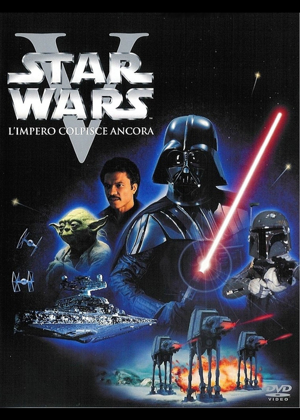
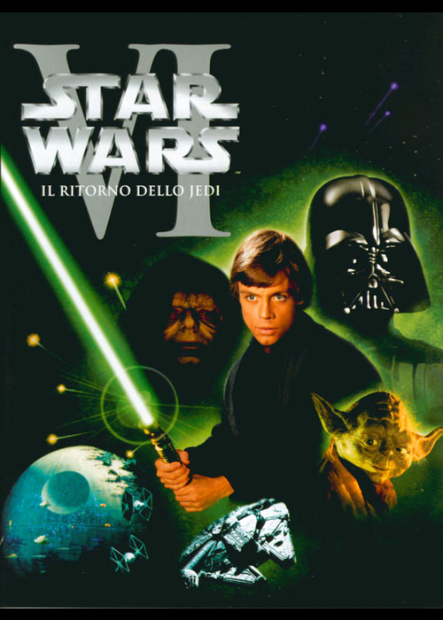
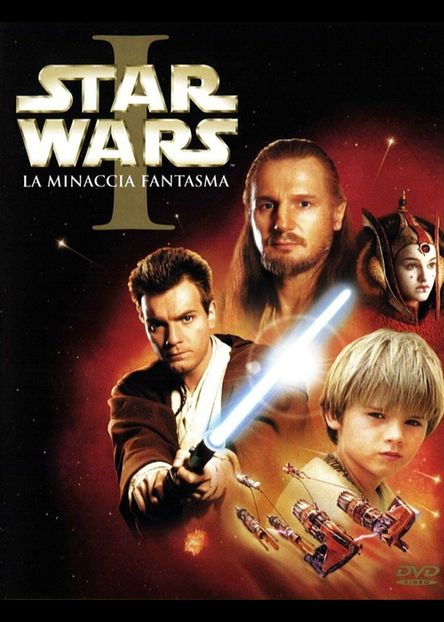
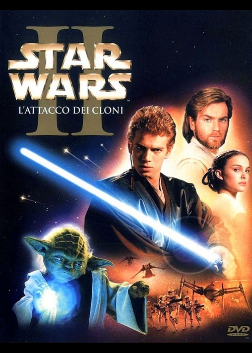
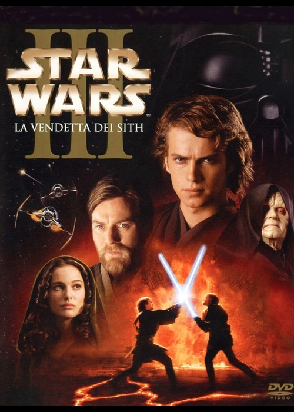
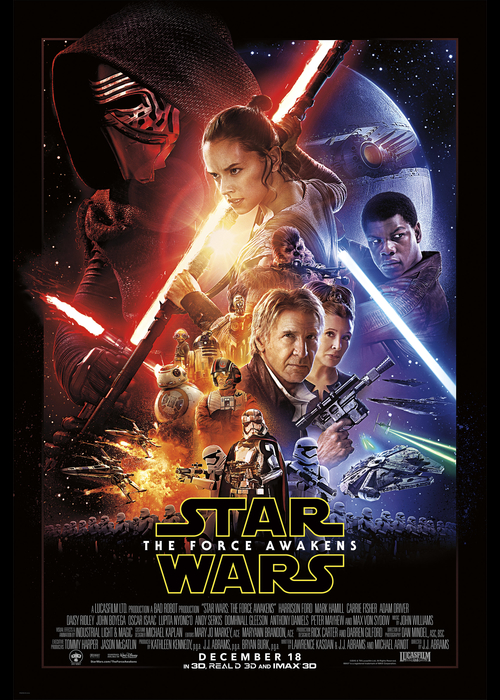
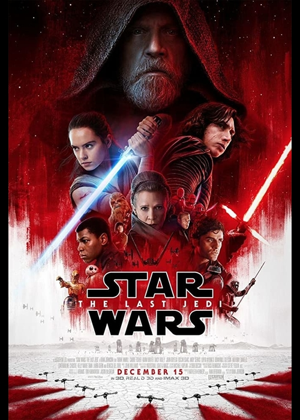
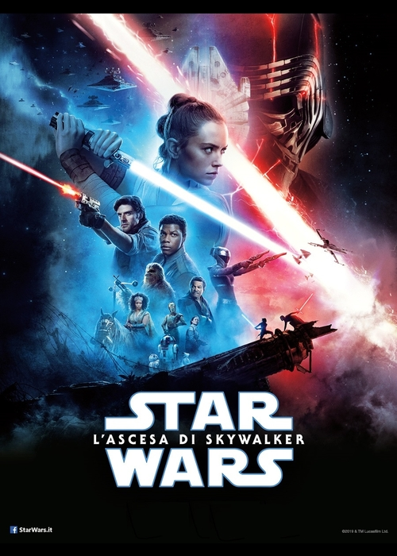

Il primo episodio della trilogia originale è ambientato 19 anni dopo la Fondazione dell’Impero Galattico. L’imperatore Palpatine è sempre più forte e Lord Darth Vader ha sterminato gli ultimi Jedi rimasti. Nel frattempo, però, si è formata l’Alleanza Ribelle, che è riuscita a entrare in possesso delle planimetrie della Morte Nera, una stazione spaziale in grado di distruggere interi pianeti con un raggio mortale. La principessa Leila (Leia nella versione originale), membro dell’Alleanza Ribelle, viene catturata dagli agenti dell’Impero, ma riesce a trasferire le planimetrie nella memoria del droide R2-D2 (C1-P8 nella versione originale). Il droide, insieme al droide C-3PO (D-3BO) sono inviati sul pianeta Tatooine per trovare Obi-Wan Kenobi, ma i due sono catturati e venduti al contadino Owen Lars, che vive con la moglie e con il nipote Luke Skywalker. Luke aiuta i due droidi a trovare Obi-Wan, ormai anziano, il quale racconta al ragazzo che suo padre è caduto per il tradimento di Darth Vader e lo introduce alla filosofia Jedi. I due, poi, decidono di reclutare il contrabbandiere Ian Solo, pilota dell’astronave Millennium Falcon, e il suo co-pilota Chewbecca, per liberare la Pricipessa Leila e consegnare le mappe all’Alleanza. Il piano riesce e il gruppo si mette in slavo sulla luna del pianeta Yavin, da cui i ribelli pianificano l’attacco alla Morte Nera, che viene distrutta anche grazie all’aiuto di Luke.

Tre anni dopo la distruzione della Morte Nera, le forze ribelli devono evacuare la loro base sul pianeta Hoth per sfuggire alla persecuzione delle armate imperiali, guidate da Darth Vader. Luke, nel frattempo, arriva a Dagobah per diventare uno Jedi sotto la guida dell’ultimo maestro ancora in vita, Yoda, mentre Leila e Ian Solo si recano sul pianeta Bespin, guidato da un amico di Ian, Lando Calrissian, dove però sono imprigionati da Darth Vader. Avvertendo che i due amici sono in pericolo, Luke Skywalker va in loro aiuto e si scontra in duello con Darth Vader: durante lo scontro, Luke perde una mano e Vader gli rivela di essere suo padre, ex Jedi chiamato un tempo Anakin Skywalker. Luke si getta da uno dei ponti del pianeta-colonia, ma Leila, salvata da Lando, percepisce la sua richiesta di aiuto e lo salva a bordo del Millenium Falcon. Mentre i robot medici ricostruiscono la mano a Luke, Lando e Chewbecca si recano verso il luogo in cui Ian Solo è ancora tenuto prigioniero.

Leila, ormai innamorata di Ian Solo, chiede a Luke di aiutarla a salvare l’amato, tenuto prigioniero da Jabba the Hutt. Il piano funziona, e Luke torna su Dagobah per completare il suo addestramento, ma scopre che Yoda è in punto di morte. Il maestro Jedi gli rivela che Darth Vader è davvero suo padre e che dovrà affrontarlo nuovamente per diventare un Jedi. Inoltre, dallo spirito di Obi-Wan, Luke scopre che la Principessa Leila è sua sorella gemella. Nel frattempo, però, Ian e Leila scoprono che è stata creata una nuova Morte Nera e guidano un gruppo di ribelli sulla Luna boscosa di Endor per disattivare il campo di energia che alimenta lo scudo spaziale di protezione della stazione orbitante. Luke, invece, si reca direttamente sulla Morte Nera, dove affronta il padre e l’Imperatore: il ragazzo viene sconfitto da Palpatine, ma Darth Vader, per proteggere il figlio, si scaglia contro l’Imperatore, uccidendolo e morendo poco dopo tra le braccia di Luke a causa delle ferite riportate. La Morte Nera viene infine distrutta e Luke si riunisce a Ian e Leila. Mentre i ribelli festeggiano la fine dell’Impero, Luke sorride agli spiriti di Obi-Wan e Yoda, a cui si è unito quello di suo padre, il Jedi Anakin Skywalker.

A causa di un danno all’iperpropulsore, però, il gruppo è costretto ad atterrare sul pianeta Tatooine, dove incontra Anakin Skywalker, un bambino di nove anni che lavora come schiavo. Il Jedi vede nel ragazzo la figura del Prescelto, ossia colui che porterà nuovamente equilibrio nella Forza. Anakin riesce a riscattare la sua libertà vincendo una gara di gusci e lascia il pianeta con Qui-Gon, Obi Wan, Jar Jar Binks e la Regina. Dopo essere arrivati nel pianeta capitale della Repubblica, Coruscant, Amidala non riceve l’aiuto sperato dal Senato Galattico contro la rivolta che sta avvenendo a Naboo, così come i senatori nutrono dubbi sull’addestramento del piccolo Anakin, troppo insicuro e quindi suscettibile all’influenza negativa della Forza. La Regina decide allora di tornare a Naboo insieme al jedi dove riesce a convincere il popolo Gungan ad allearsi con le forze di Naboo contro la Federazione dei Mercanti. Qui-Gon viene ucciso da Darth Maul in un combattimento con le spade laser, ma Obi-Wan, poco dopo riesce a uccidere l’apprendista Sith. Obi-Wan promette a Qui-Jon in punto di morte di addestrare Anakin per diventare un Jedi. Palpatine viene eletto Cancelliere Supremo, al fianco di Amidala, mentre il Concilio dei Jedi accetta riluttante Anakin Skywalker come apprendista.

Dieci anni dopo le vicende del primo film, la Repubblica Galattica si trova nuovamente in difficoltà: Darth Sidious e il Jedi rinnegato Dooku creano la Confederazione dei Sistemi Indipendenti, un’alleanza di pianeti che vuole dichiarare l’indipendenza dalla Repubblica. Nel frattempo, Anakin viene nominato guardia di Padmé, diventata senatrice e nel mirino di numerosi attentati, mentre Obi-Wan cerca di catturare chi minaccia la vita di Padmé. Anakin e la ragazza si innamorano, nonostante il codice Jedi impedisca al giovane di avere relazioni sentimentali. Obi-Wan riesce a trovare il sicario su Kamino, pianeta dove è segretamente in corso la creazione di un grande esercito di cloni. Obi-Wan viene catturato dalla Confederazione, ma in suo aiuto arrivano i Jedi, appoggiati da Palpatine, il quale decreta l’esercito dei cloni come armata della Repubblica. Da questo momento, inizia la Guerra dei Cloni tra forze repubblicane e confederate. Intanto, Anakin e Padmé si sposano in segreto a Naboo.

La Guerra dei Cloni è iniziata da tre anni: Anakin e Obi-Wan si recano in aiuto a Palpatine, catturato da Dooky e dal comandante dei droidi, il Generale Grievous. Anakin, nel frattempo, ha sogni premonitori in cui vede Padmé morire. Palpatine, in realtà, è il Signore Oscuro dei Sith, e cerca di portare il giovane Jedi dalla sua parte, convincendolo che il Lato Oscuro racchiude il potere per salvare la vita dell’amata. Anakin, così, decide di diventare suo allievo. Palpatine riesce a sciogliere il Senato e ad autoproclamarsi Imperatore dell’Impero Galattico, ponendo fino alla Repubblica, mentre Anakin e l’esercito dei cloni sterminano i Jedi. Obi-Wan, però, affronta il suo ex allievo sul pianeta Mustafar, mutilandolo delle gambe e di un braccio. Il ragazzo viene salvato prima di morire da Sidious, che lo fa operare e lo dota di uno scafandro salvavita, trasformandolo così in Darth Vader (o Lord Fener in italiano). Nel frattempo, Padmé muore mentre dà alla luce due gemelli, Luke e Leila, che vengono separati e nascosti su due pianeti diversi – Tatooine e Alderann, dove i Sith non potranno percepire la loro presenza.

La storia si svolge circa 30 anni dopo i fatti raccontati in Episodio VI – Il Ritorno dello Jedi. Dopo la distruzione della seconda Morte Nera e la caduta dell’Impero, dalle ceneri di quest’ultimo è nato il sinistro Primo Ordine, con a capo il Leader Supremo Snoke e il suo braccio destro Kylo Ren. Oltre alla Resistenza, sostenuta dalla Repubblica e guidata dal generale Leia Organa, il pericolo numero uno del Primo Ordine è l’ultimo dei cavalieri jedi, Luke Skywalker, misteriosamente sparito da tempo. A cercare Luke è anche sua sorella Leia che vede in lui l’unica possibilità di ristabilire pace e giustizia nella galassia. Per trovarlo, Leia ha inviato sul pianeta Jakku uno dei suoi più bravi e coraggiosi piloti, Poe Dameron. La missione segreta di Poe è quella di recuperare un indizio sul luogo in cui si trova Luke…

Rey è riuscita finalmente a trovare Luke, ma Skywalker non sembra poi così felice di avere una nuova apprendista, al contrario ha l'aria di essere determinato a mandarla via, sebbene la ragazza sia determinata a restare. Nel frattempo la Ribellione vive il suo momento più disperato: colpiti duramente durante una fuga, Leia e i suoi si sono andati a cacciare in una trappola ancora più grande e più temibile. Poe, Finn e Rose, una coraggiosa combattente con una sorella da vendicare, cercano di trovare una via d'uscita a quella che sembra una situazione impossibile. Per riuscire a liberarsi della flotta nemica infatti dovrebbero intrufolarsi a bordo della nave ammiraglia e disattivare un congegno che consente a Hux e ai suoi di tracciarli anche nell'iperspazio. Rose e Finn partono quindi alla ricerca di un misterioso hacker che dovrebbe aiutarli a trovare i codici per salire a bordo della nave imperiale. Intanto Rey scopre di avere una connessione mentale con Kylo Ren e si convince che Ben Solo si possa ancora salvare. Luke accetta di darle aiuto per sviluppare la Forza, seppure di controvoglia. Kylo Ren però incita la ragazza a liberarsi di Luke e a spingerlo a raccontargli cosa è davvero accaduto fra zio e nipote. Le versioni di Kylo e di Luke sono diverse, ma entrambi altrettanto inquietanti. Incapace di convincere Luke a seguira, Rey parte per andare ad aiutare i suoi amici, con l'idea però di recarsi prima da Kylo Ren per farlo tornare al lato della luce. Riuscirà Rey a convertire Kylo? E Luke resterà davvero a guardare mentre la Ribellione e sua sorella Leia rischiano di soccombere?

Star Wars: L'ascesa di Skywalker, film diretto da J.J. Abrams, è il terzo capitolo della trilogia della saga di Guerre Stellari ed è l'episodio finale epico dell'epopea su Skywalker. Un anno dopo gli eventi del precedente film, Gli ultimi Jedi, la Resistenza sopravvissuta o quello che ne rimane affronta ancora una volta il Primo Ordine. Non dovrà fare i conti solo con l'oscuro regime, ma anche con il passato e fronteggiare i propri tumulti interni. Al tempo stesso l'antica battaglia tra Jedi e Sith sembra aver raggiunto l'apice, mettendo un punto definitivo alla saga di Skywalker. Il film permetterà di scoprire di più anche sul passato di Rey (Daisy Ridley), l'eroina della nuova trilogia che ha definitamente abbracciato il Lato Chiaro della Resistenza, e sull'identità dei suoi genitori, che, secondo i capitoli precedenti, l'hanno abbandonata durante la tenera età.